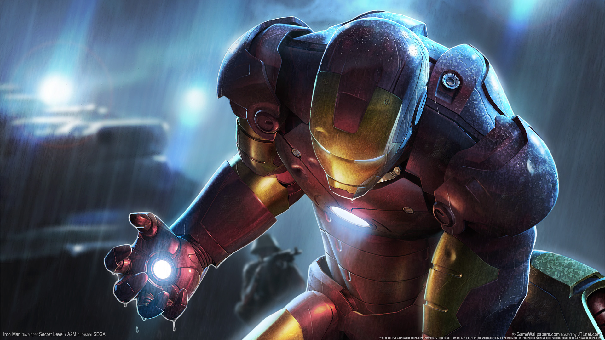
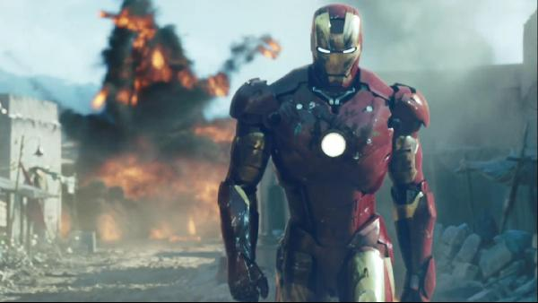

Iron Man is a fictional superhero appearing in American comic books published by Marvel Comics. The character was co-created by writer and editor Stan Lee, developed by scripter Larry Lieber, and designed by artists Don Heck and Jack Kirby. The character made his first appearance in Tales of Suspense #39 (cover dated March 1963), and received his own title in Iron Man #1 (May 1968).

Iron Man's Marvel Comics premiere in Tales of Suspense #39 (cover dated March 1963) was a collaboration among editor and story-plotter Stan Lee, scripter Larry Lieber, story-artist Don Heck, and cover-artist and character-designer Jack Kirby.[4] In 1963, Lee had been toying with the idea of a businessman superhero.[5] He wanted to create the "quintessential capitalist", a character that would go against the spirit of the times and Marvel's readership.[6] Lee said.

The original Iron Man title explored Cold War themes, as did other Stan Lee projects in the early years of Marvel Comics. Where The Fantastic Four and The Incredible Hulk respectively focused on American domestic and government responses to the Communist threat, Iron Man explored industry's role in the struggle. Tony Stark's real-life model, Howard Hughes, was a significant defense contractor who developed new weapons technologies. Hughes was an icon both of American individualism and of the burdens of fame.[20]
After issue #99 (March 1968), the Tales of Suspense series was renamed Captain America. An Iron Man story appeared in the one-shot comic Iron Man and Sub-Mariner (April 1968), before the "Golden Avenger"[21] made his solo debut with Iron Man #1 (May 1968).[22] The series' indicia gives its copyright title Iron Man, while the trademarked cover logo of most issues is The Invincible Iron Man.
Robert Downey Jr. WIKIPEDIA.
Iron Man 1 Roger Ebert and Richard Corliss named Iron Man as among their favorite films of 2008. It was selected by the American Film Institute as one of the ten best films of the year, and by Empire magazine as one of The 500 Greatest Movies of All Time. Tony Stark was also selected by Empire as one of The 100 Greatest Movie Characters of All Time, and on their list of the 100 Greatest Fictional Characters, Fandomania.com ranked him at number 37.
Iron Man 2 Main article: Iron Man 2 A sequel written by Justin Theroux and released in the United States on May 7, 2010, saw Favreau, Downey, Paltrow, and Jackson returning. Don Cheadle replaced Terrence Howard in the role of Colonel Rhodes, who is also seen as War Machine. Also starring are Mickey Rourke as villain Ivan Vanko, Sam Rockwell as Justin Hammer, and Scarlett Johansson as S.H.I.E.L.D. agent Natasha Romanoff.
Iron Man 3 Main article: Iron Man 3 Walt Disney Studios and Marvel Studios released a second sequel on May 3, 2013,[146] with Favreau opting to direct Magic Kingdom instead, but still reprising his role as Happy Hogan.[147] Downey, Paltrow, and Cheadle also return, while Shane Black took over directing,[148] from a screenplay by Drew Pearce. Guy Pearce also starred as Aldrich Killian, and Ben Kingsley as Trevor Slattery.
The online Marvel Shop is the official site for Marvel shopping. Find the best deals on Marvel merchandise featuring all your favorite Marvel characters.
Rate this webpage
Please gives us your valuable feedback.